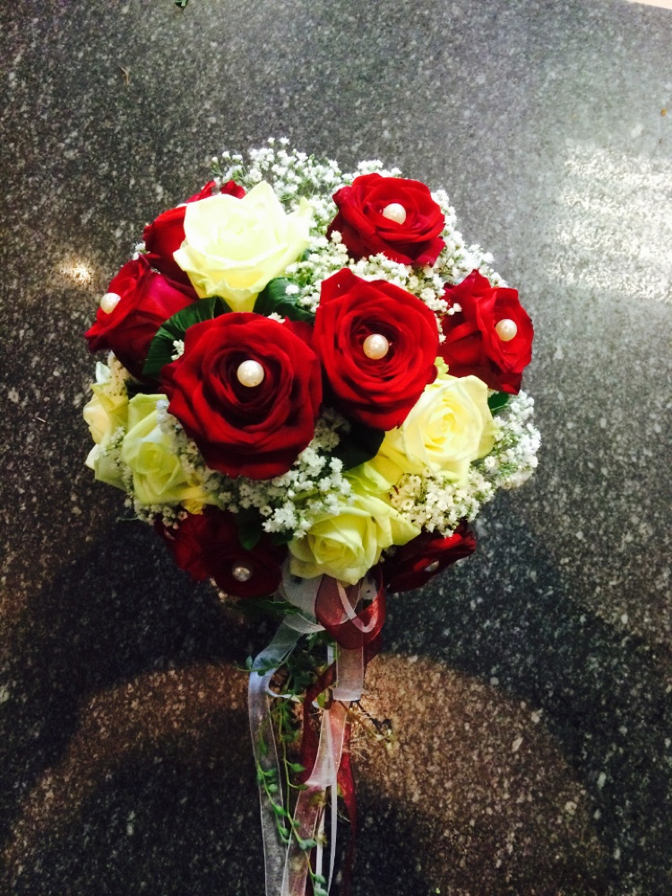
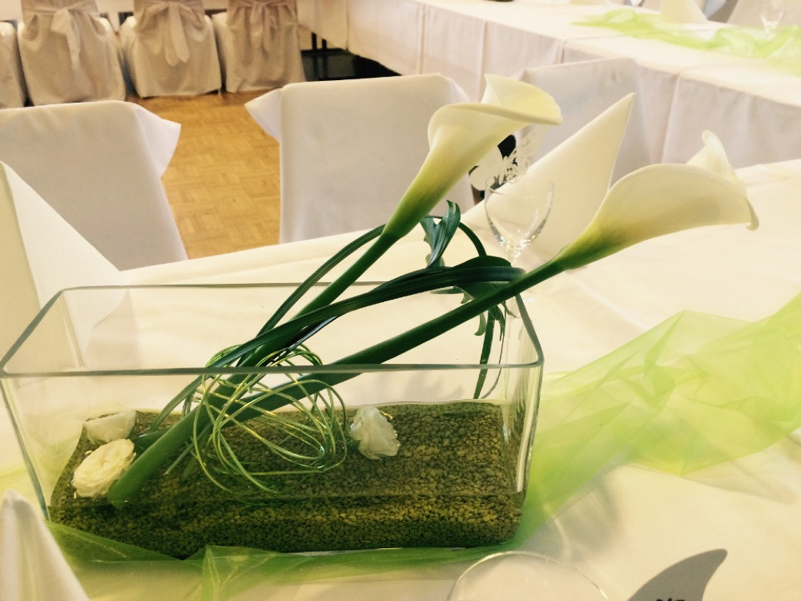
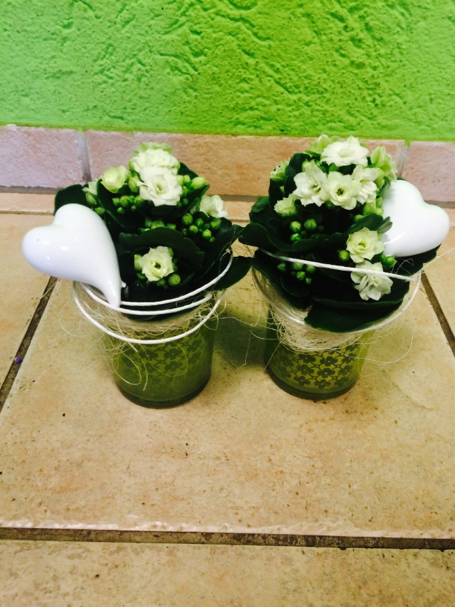
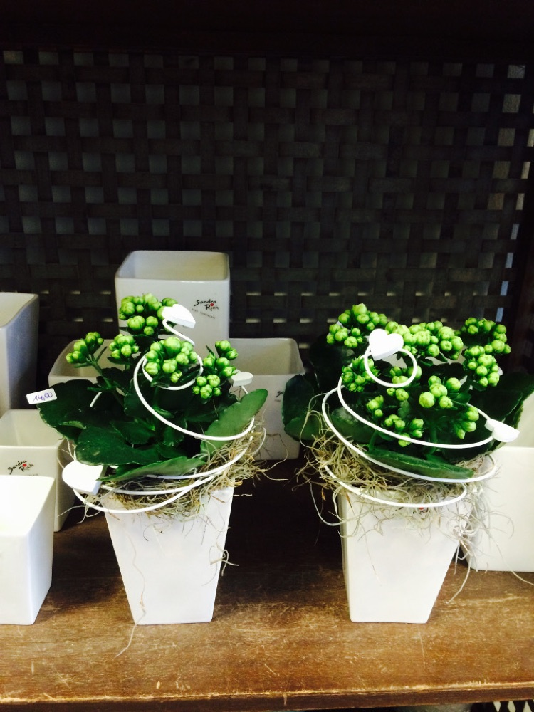
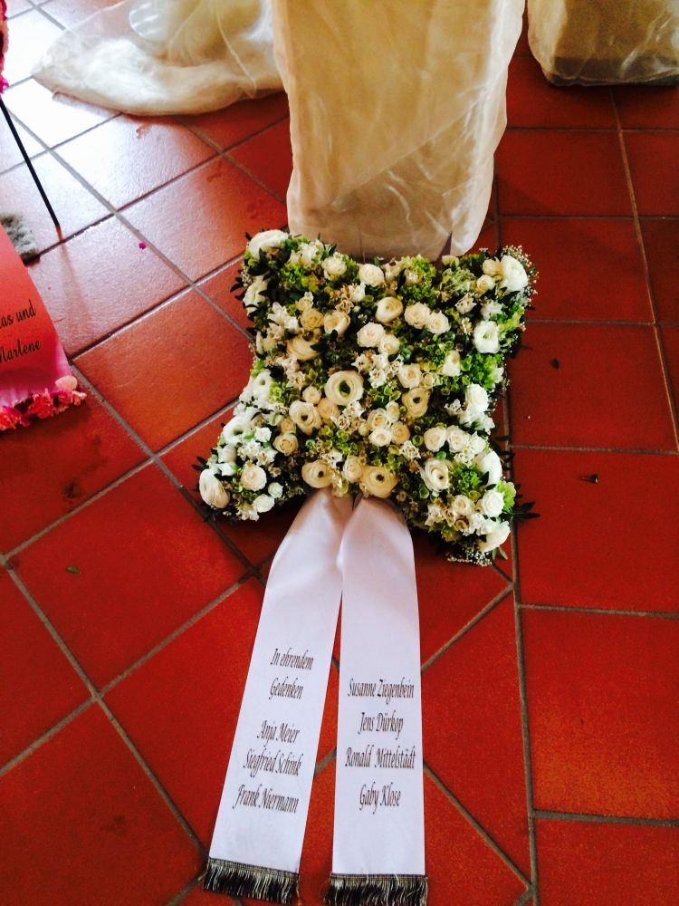
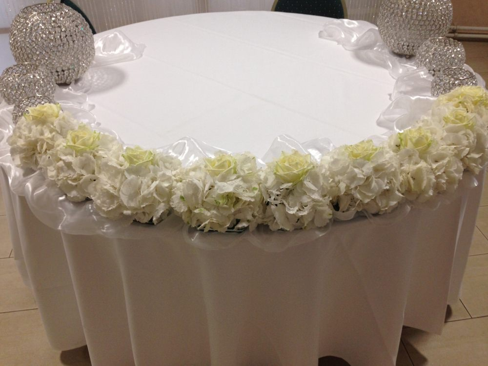
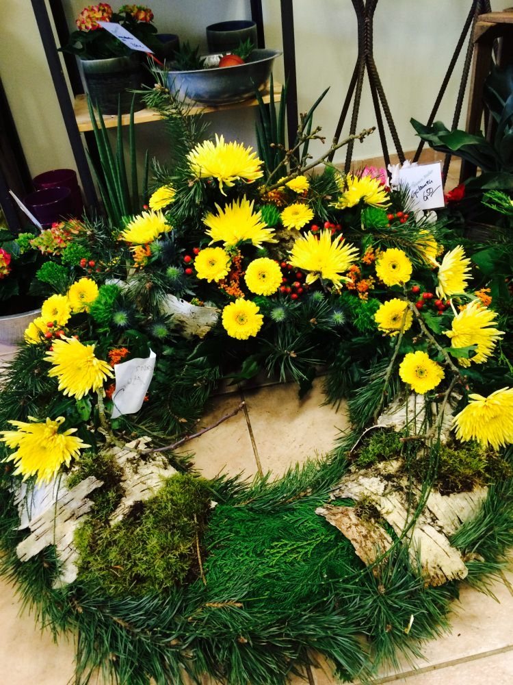
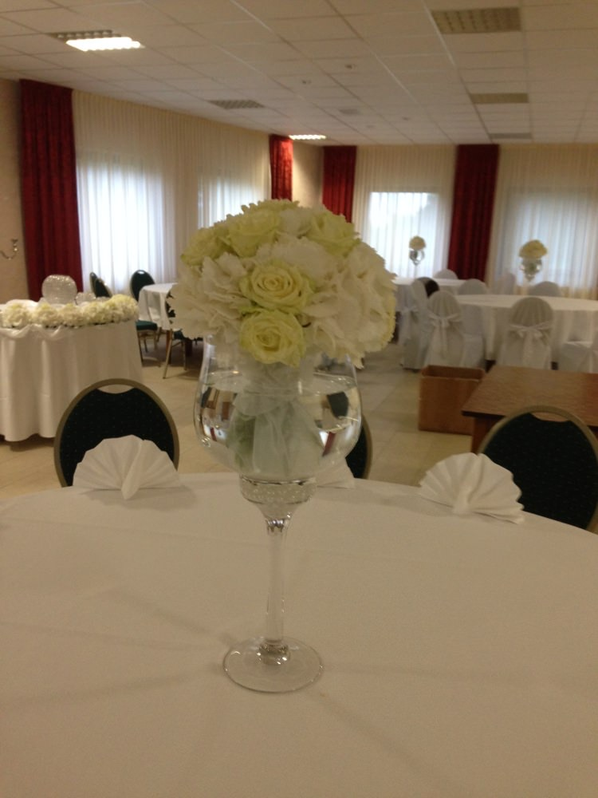
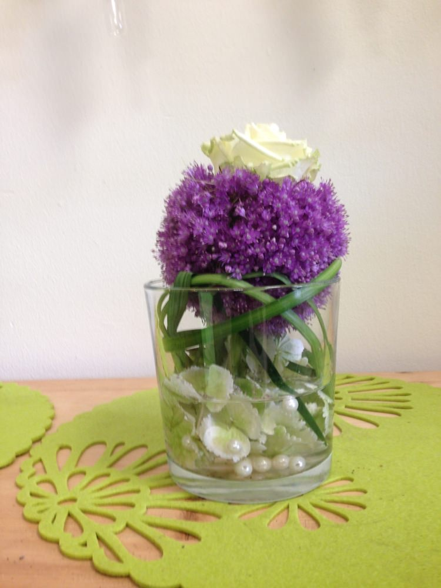

Galerie
Einige Impressionen aus unserem Blumenatelier
Ein Blick auf unsere Arbeiten — von Hochzeit und Tischdeko über Geschenke und Trauerfloristik bis zu frischen Schnittblumen.
Hochzeitsdeko
Brautsträuße, Anstecker und festlicher Raumschmuck.

Tischdeko
Stimmige Tischdekoration für Feiern und Anlässe.


Geschenkartikel
Kleine Aufmerksamkeiten und florale Geschenke.



Trauerfloristik
Kränze, Gestecke und Sträuße — würdevoll gebunden.




Schnittblumen
Frische Schnittblumen der Saison.
Sie haben etwas Bestimmtes im Sinn? Rufen Sie uns an — wir binden es Ihnen.